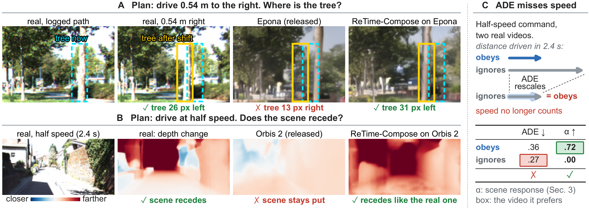
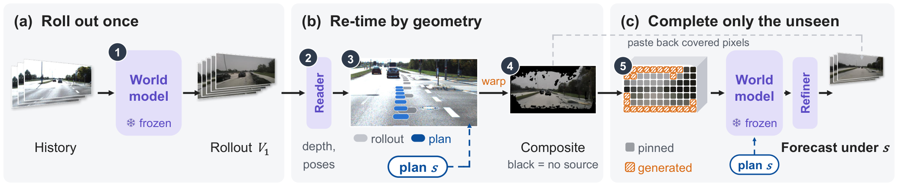
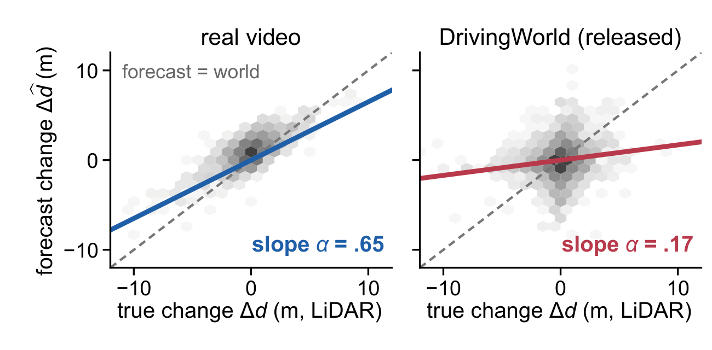
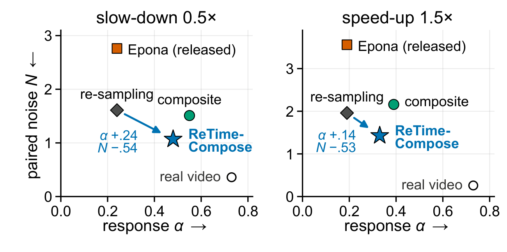
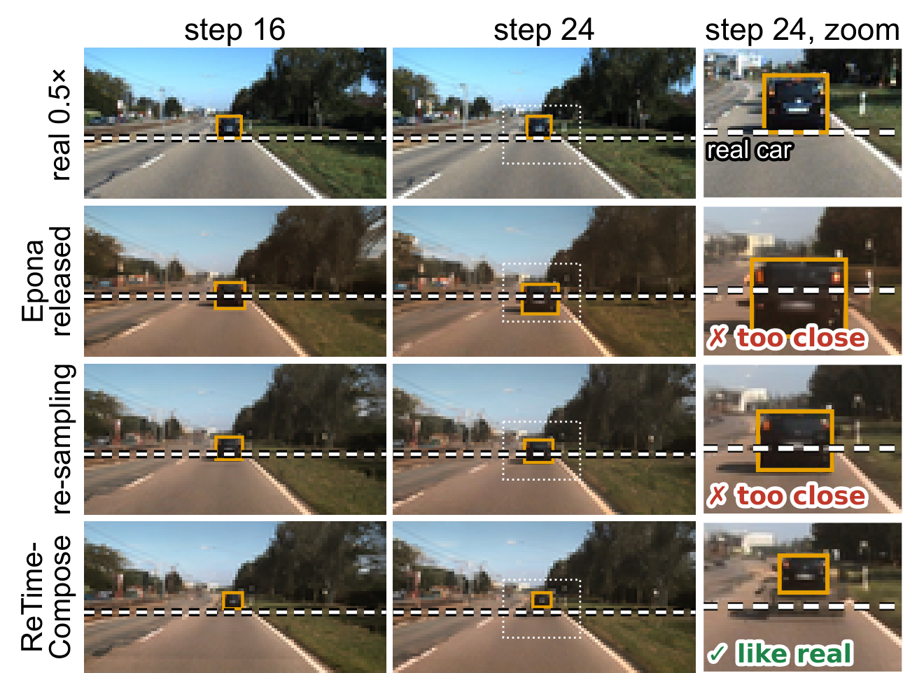

Driving World Models Move the Camera, Not the Scene
Chongqing University
*Equal contribution

TL;DR. Recorded drives already contain the real outcomes of plans that were never driven. Measured against them, released plan-conditioned world models move their camera but barely move the scene. ReTime-Compose delivers the plan to a frozen generator as geometry, without training.
Abstract
Plan-conditioned driving world models are used to compare candidate plans, so their forecast should change with the plan as the real scene would, yet widely used control metrics check only whether the camera follows the command. Recorded drives already contain real outcomes of plans that were never driven: retiming a log gives pose-matched images and LiDAR for other speeds, and a stereo rig records a laterally shifted view. Against these references, released world models move their camera but barely move the scene: their scene response, the share of the real change in distance that the forecast reproduces, reaches at most about a third of real video's, and the trajectory score cannot tell an executed speed command from an ignored one. Interventions inside the generator trace the failure to the plan's channel. The forecast geometry follows the context frames; once they carry the planned geometry, plan tokens add little. ReTime-Compose therefore delivers the plan as geometry, without training. It transports the frames of one logged-speed rollout to the planned cameras, and the frozen model completes only what no frame covers. Frozen generators then follow a 0.54 m lateral shift nearly as the real scene does on KITTI, nuScenes and Argoverse 2, and respond more than re-sampling to slow-down plans in three generators and to speed-up plans in two.
Method: ReTime-Compose

Measuring the scene, not only the camera


Qualitative example

Code
Evaluation code for the scene response and the ReTime-Compose implementation will be released in this repository. Datasets (KITTI, nuScenes, Argoverse 2) and released world-model checkpoints must be obtained from their original sources under their own licenses.
BibTeX
@article{retimecompose,
title = {Driving World Models Move the Camera, Not the Scene},
author = {Feng, Yuqiao and Ao, Xiaoyu},
journal = {arXiv preprint arXiv:XXXX.XXXXX},
year = {2026}
}